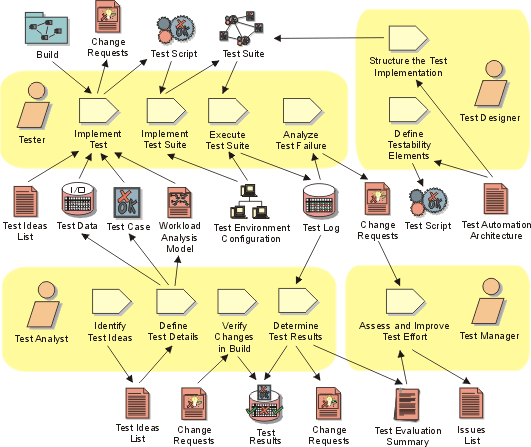

Disciplines >
Disciplines >
 Test >
Test >
 Workflow >
Test and Evaluate
Workflow >
Test and Evaluate
Disciplines >
Test >
Workflow >
Test and Evaluate
Workflow Detail:
|
Topics |
 |
The purpose of this workflow detail is to achieve appropriate breadth and depth of the test effort to enable a sufficient evaluation of the Target Test Items—where sufficient evaluation is governed by the Test Motivators and Evaluation Mission. Typically performed once per test cycle, this work involves performing the core tactical work of the test and evaluation effort: namely the implementation, execution and evaluation of specific tests and the corresponding reporting of incidents that are encountered.
For each test cycle, this work is focused mainly on:
The work is primarily centered around the Tester and Test Analyst roles. The most important skills required for this work include investigative and analytical skills, tenacity, thoroughness, good technical knowledge and good verbal and written communication skills (documentation of incidents, change requests and so on).
As a heuristic for relative resource allocation by phase, typical percentages of test resource use for this workflow detail are: Inception — 05%, Elaboration — 25%, Construction — 40% and Transition — 35%.
Where the requirement for test automation is particularly important, it may be useful to assign the creation and maintenance of automation assets to a separate sub-team, allowing them to specialize on automation concerns. This allows the other team members to focus on the improvement of non-automation test assets.
Typically this work is performed multiple times during an iteration; the actual number of times often equates to once per Build—note however that it's typical not to test every Build. Driven by the Build schedule, this work may increase during the course of the iteration. When appropriate breadth and depth of testing is achieved within a test cycle, focus turns to Workflow Detail: Achieve Acceptable Mission.
For iterations prior to and including those early in the Construction phase, additional effort is usually required to address tactical problems encountered for the first time during test implementation and execution. These issues often detract from the number of actual tests successfully implemented and executed and limit either the breadth or depth of the testing.
The sophistication and availability of test automation tools and the necessary prerequisite skills to use them effectively will have an impact on the resourcing of this work. It may be appropriate to strategically deploy specialized contract resource for some part of this work to improve the likelihood of success. It may also be more economical to lease the automation tools and contract appropriately skilled people to use the tools, especially to help mitigate the risks in getting started. You need to balance the benefits of this approach with the necessity to develop in-house skills to maintain automation assets into the future.
The following references provide more detail to help guide you in performing this work:
For further information about the underlying concepts behind this work:
|
Rational Unified
Process
|